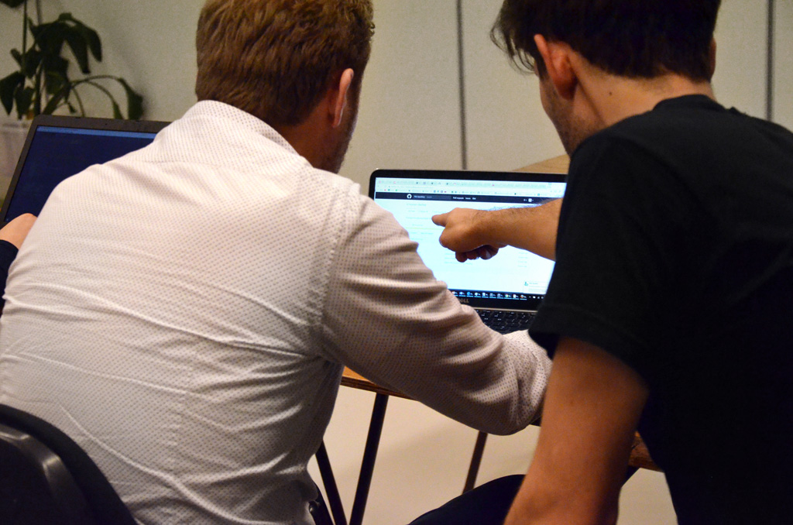

Het kwam goed, zoals Marjolijn had voorspeld. Mijn cijfers groeiden van een 8,5 naar een 9 en zelfs 10’en. Het leek erop dat ik de taal begon te begrijpen, en heel belangrijk, de manier van werken. Door de aanpak van Nick realiseerde ik me hoe belangrijk de opensourcegedachte is bij het programmeren, waarbij je vrije toegang krijgt tot softwareoplossingen. Natuurlijk had ik daar al vaker over gehoord en geschreven, maar nu ervoer ik hoe dit werkte. Hierdoor was ik in staat ingewikkelde opdrachten toch goed te maken.
'Het gaat om kleine blokken oplossingen die je op elkaar stapelt tot een groot blok code'
Het idee van open source is dat iedereen zijn code op het web plaatst. De kunst is te weten hoe je daarmee om moet gaan. Wie de code van een ander kan interpreteren en in zijn eigen code weet te gebruiken, kan daaraan plezier beleven. Deze manier van werken is even wennen voor iemand die werkt in een omgeving waar plagiaat een doodzone is. Stukken tekst in een eigen verhaal zetten, dat doe je niet. Daarom probeerde ik in het begin waarschijnlijk elke opdracht zelf van begin tot eind op te lossen, maar dat is helemaal niet nodig. Kort gezegd: Wie goed kan zoeken op Google, komt er ook.
‘Programmeren is stap voor stap de oplossing zoeken’, leerde Nick me. Het gaat om kleine blokken oplossingen die je op elkaar stapelt tot een groot blokcode die precies doet wat jij wilt. Op Github bijvoorbeeld plaatst iedereen zijn werk. Dus zoek je iets specifieks wat iemand eerder heeft gebouwd, dan vind je dat daar of je vindt een onderdeel van je antwoord. Verder zijn er programmeurs die handleidingen bouwen om bijvoorbeeld met CSS te animeren of om je pagina’s responsive te maken, zoals Bootstrap. En dan zijn er vele vraagbaken op het web zoals Stackoverflow, waar in de afgelopen jaren vrijwel alle vragen wel zijn gesteld.

Nick: ‘Programmeren is stap voor stap de oplossing zoeken’
Dit zelf op zoek gaan naar de oplossing past in de huidige tijd. Nieuwe digitale bedrijven werken ook zo. Neem Spotify. Heb je een probleem, ben je gehackt, dan kun je niemand bellen. Je kunt je vraag digitaal in ‘the community’ stellen en daaruit moet het antwoord komen. Maar stel je je vraag niet goed, dan krijg je ook geen antwoord. Zo werkt het ook bij programmeren.
Er lukte steeds meer, en ik kreeg er schik in. Ik zag wat er allemaal mogelijk was en probeerde steeds meer uit, ook als het niet bij de huiswerkopdracht hoorde. Als ik iets wilde bereiken, dan werkte ik daar net zo lang aan totdat het me lukte. Dan ging het om ogenschijnlijk kleine dingen als een tekst die niet van boven, maar van rechts de pagina in stroomde. Ik vond rechts mooier, dus daar werkte ik aan, ook als het weer uren kostte.
Als een kind zo blij stuurde ik Marjolijn op een vrijdagavond een bericht toen ik mijn pagina responsive had gemaakt. ‘Je klinkt echt als een nerd,’ stuurde ze me terug. Een nerd zal ik niet snel worden, hoewel het wel verslavend is. Ik zie nu wat er mogelijk is op het web en kan daarmee zo veel als ik wil experimenteren. Ik kan prototypes maken, testen met kleine ideetjes die ik heb en hopelijk komen daar weer nieuwe grotere ideeën uit. Dat geeft een goed gevoel.
De cursus is nog niet voorbij. Ik heb nog vier weken te gaan. Maar mijn programmeeravontuur eindigt niet over vier weken. Dat weet ik zeker. Dit was slechts een begin.